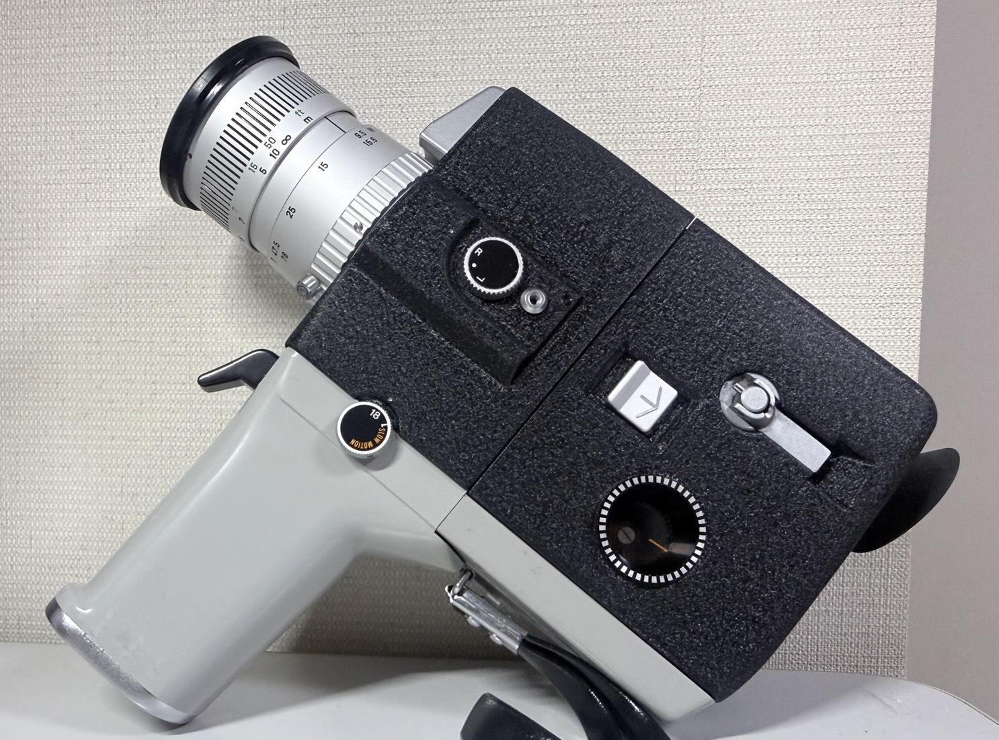
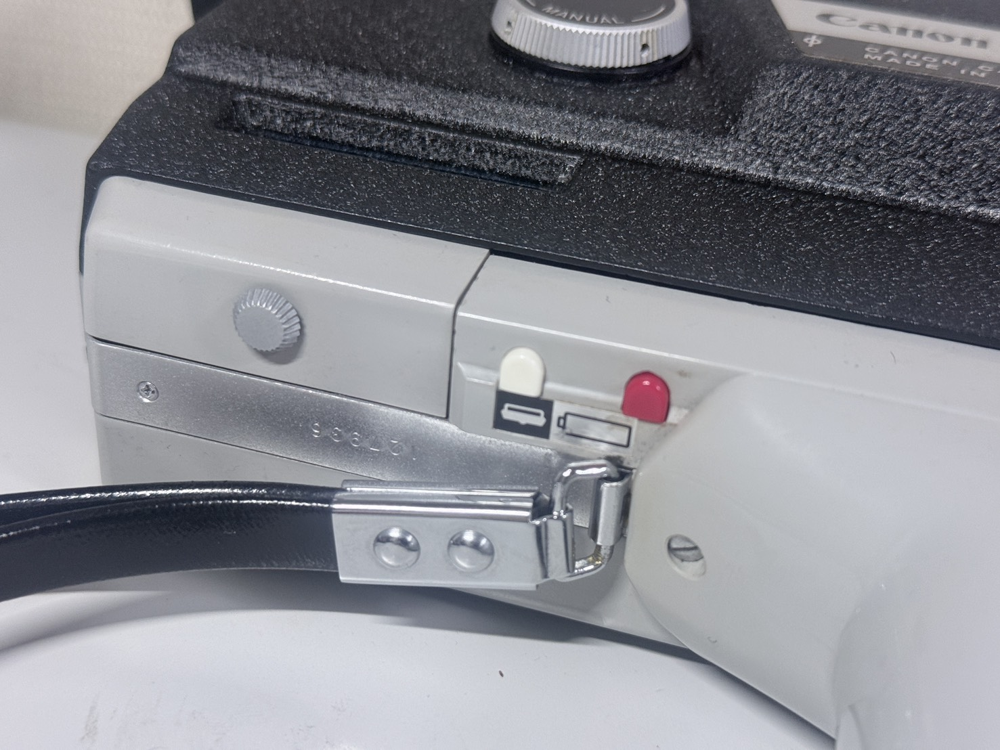
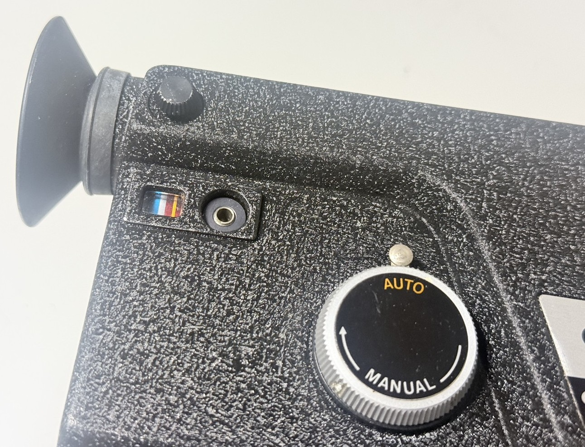
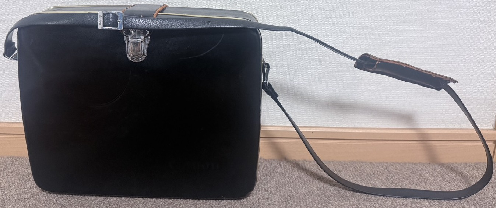
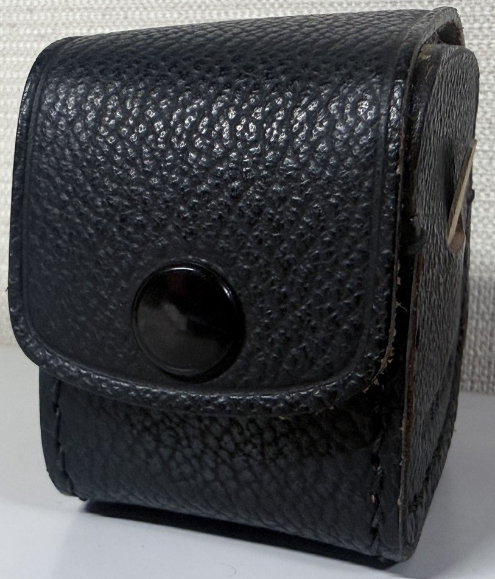
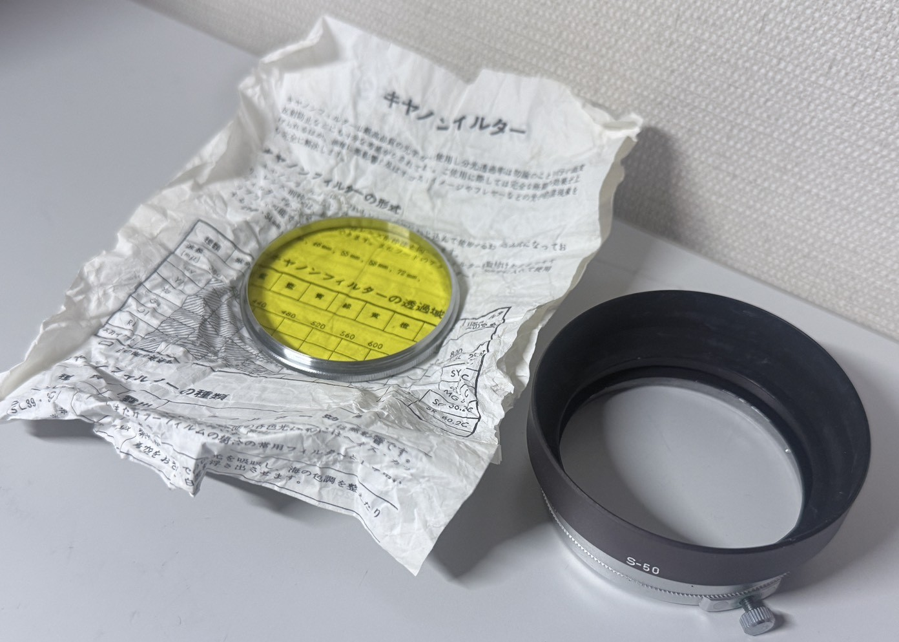
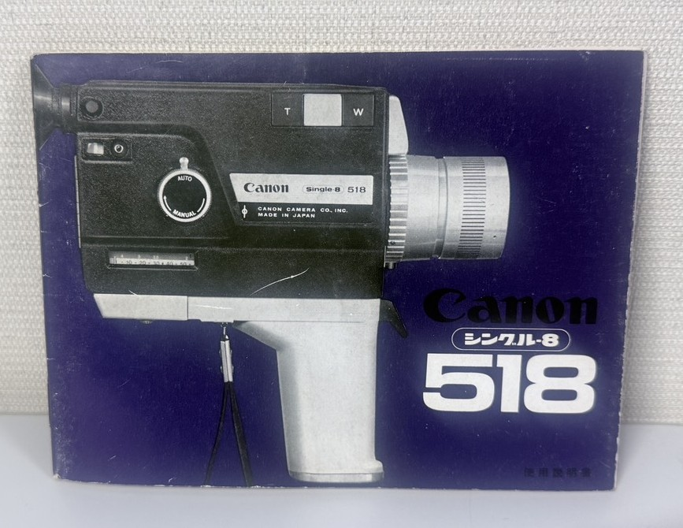

【CANON single-8 518】
【とにかく”異質”】
基本情報
| メーカー | 【Canon】 |
|---|---|
| 機種名 | 【CANON single-8 518】 |
| 発売年 | 【1972年】 |
| 使用フィルム | 【FUJI single-8】 |
| 撮影方式 | 【8mmフィルムムービーカメラ（Single-8方式）】 |
| レンズマウント | 【レンズ固定式（9.5–47.5mm F1.8）】 |
| シャッター | 【ロータリーシャッター・18コマ/秒、約36コマ/秒】 |
| 露出 | 【EE自動露出／手動絞り】 |
外観

これは、[シネカメラ]と呼ばれます”映像用カメラ”です。 よって”写真撮影用カメラ”とは似ても似つかないよな形状を取ってます。
特徴
上でも記載した通り、これはビデオカメラが出る前に主流であった”シネカメラ”というジャンルのものです。
シネカメラというものはおおよそ1970~80くらいに一般大衆で使用されてたものです。
フィルムはざっと二種類ありsuper-8 single-8の二つです。こちらは両方とも8mmで映画用の奴と同じなのですが
（なんなら共通規格？相互規格みたいなもんなのですが）
違いが結構あります。
single-8は富士フィルムが開発し、販売していましたが2013年をもって販売・製造がなくなり、
いまは有志の方が詰め替えなどして細々と生き残ってる感じです。（
こちらの方々
が生産されてます。）
super-8はKodakが開発し、今も新品がメーカーより購入可能です。
（購入はこちらから）
なのでsuper-8はいまだ新品がメーカーより購入できますがsingle-8はメーカーとしてはもう販売されていないのです。
で、私持ってる奴はどうかというと・・・無論名前に”single-8”と記載が入ってるのでsingle-8を使用します。
なのでもう公式販売はないフィルムであるということですね。まぁ有志が販売している状況なだけまだマシなんでしょう。
で、カメラです。このカメラは、基本的装備？というか必要最低限の機能しか有していない、
なのでシンプルイズザベスト的な奴です。なので操作系とかに一切の面倒くささとかはありません。
スペック
スペックはいたってシンプルな感じです。
シャッタースピードも通常（基本）18/毎秒とスローシャッターの35/毎秒の二通り、測光に関しても、UM-3電池を二つ使用し。
AUTOで測光するか、マニュアルで操作する方法の二択があります。本体のみの駆動には単三電池四本を使用します。
なので、最悪単三電池四本で動けばあとはどうとでもなります。
因みにこのカメラには電池の残量を図る機能があって、露出用電池を入れるところ頃の近くにボタンがあって

絵通りのボタンを押すとその電池の残量が計れるようになってます。青のエリアまで行ったら大丈夫、赤のエリアだと不足です。 あとはその電池残量計の上あたりに視度を調整する用の螺子？があります。

実際に使ってみて
フィルムがめっちゃ高いのと、後で詳述するがややぶっ壊れているので実際には使用してない。
だが空打ちしてる感じだと、操作性は結構よさそう。
撮影について
これも実写してないので不明だが、そこまで重くもないので悪くはなさそう。
入手について
これは私が初めてヤフオクで買った品ですね。(2026/3/15落札)
今から考えても、よくもまぁオークションを始めて見て買ったのが
これだなぁとは思います。なんでほんとにこれに惹かれたんだろ・・・。
因みに付属品はケースとレンズ系のアクセサリーですね。

これがケース

これはなんか・・・小物を入れる奴。この中に↓が入ってます。

あとは説明書を別途購入しました。

金額
カメラ本体の価格は千円、説明書代も千円ですね。
購入はヤフオクでしました。
現在の状態
元々は完動品だったのですが、触ってるうちにピントの枠？が完全に脱落してしまってピント固定になっちゃってます。 修理できるのなら修理したいですね。それ以外に故障はありません
まとめ
このカメラは”フィルム”が日の目を浴びたとて、喝采を受けるのはかなり少ないであろう。
そもそもフィルムカメラが好きな人でもかなりニッチな分野だとは思う。
だからこそ、なるべくこの少ないファン層を拡大し、長く続く”趣味界隈”にしたいものだ。
なお、このカメラは著作権が切れているため、説明書を公開する。説明書
（なお色々書き込みがあるがほとんど前の人がボールペンで書き込んでるものなので、そこらへんはご容赦願いたい）
削除依頼等はこちらからどうぞ
お問い合わせはこちらから